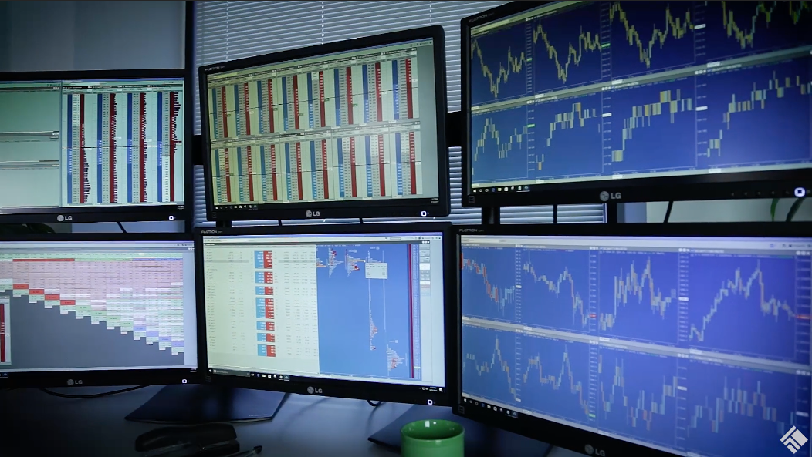
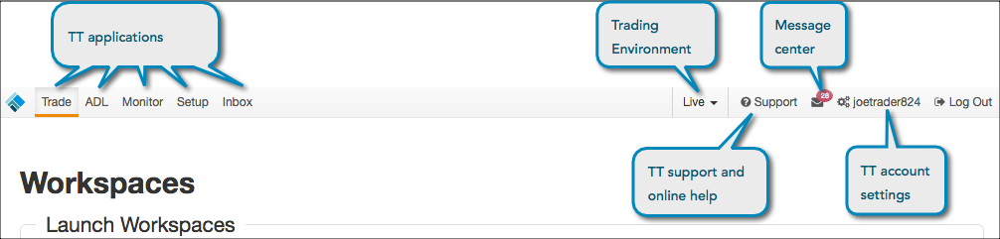

TT provides you with the robust trading functionality you have come to expect with X_TRADER in a redesigned, easy-to-access platform. Similar to X_TRADER, TT gives you the ability to view real-time and historical market data and the ability to trade with a click of the mouse.
Automated trading tools, including Autospreader, Autotrader, ADL and TT Order Types allow you to customize and automate your trade executions and end-to-end trading strategies, which are deployed on servers in our global high-speed network of colocated data centers.
TT also provides functionality that is not available in X_TRADER, including options analytics and trading on your mobile device.

TT requires none of the manual installs or upgrades of different software versions required on the X_TRADER platform. To get started on TT, you have to:
Note: To replicate your X_TRADER multi-monitor setup or continue using your Windows-based workstation environment, you can use TT Desktop. This requires a one-time "install" of the TT Desktop app on a single workstation, but upgrades to the app are done automatically and require no manual software packaging, installs, or upgrades.
After you log in, you'll land on the TT Home page, which contains the TT platform title bar at the top of the page.

Using the title bar, you can do the following:
No, all you need to use the TT platform is an account. Your administrator enables you for various capabilities, and that is all administered through the Setup application.
Just create an account to log in and start trading in our demo environment, or contact your FCM or firm to enable your account for production trading.
After you log in and land on the TT home page, you can click Take the Tour for an introduction to trading on TT.
You have access to Live and Simulation trading environments, as well as a delayed prices and a user acceptance (UAT) test environment on TT.
Your administrator will configure live connections and accounts for each market necessary and assign them to you, so you'll be able to trade with these accounts after you log in. You may also need a market data agreement for certain markets in order to view prices in each environment.
On TT, your accounts are set up for the markets you want to trade. Simply submit orders using the accounts connected to those markets.
TT automatically deploys updates on a daily basis without any need for manual intervention by it's end-users. Before an update occurs, TT will display a "hello bar" at the top of the screen to inform you of the maintenance and upgrade schedule similar to the Customer Advisories for the X_TRADER platform. Refer to the release notes in the help library for a description of the latest software changes in the Live and UAT environments.